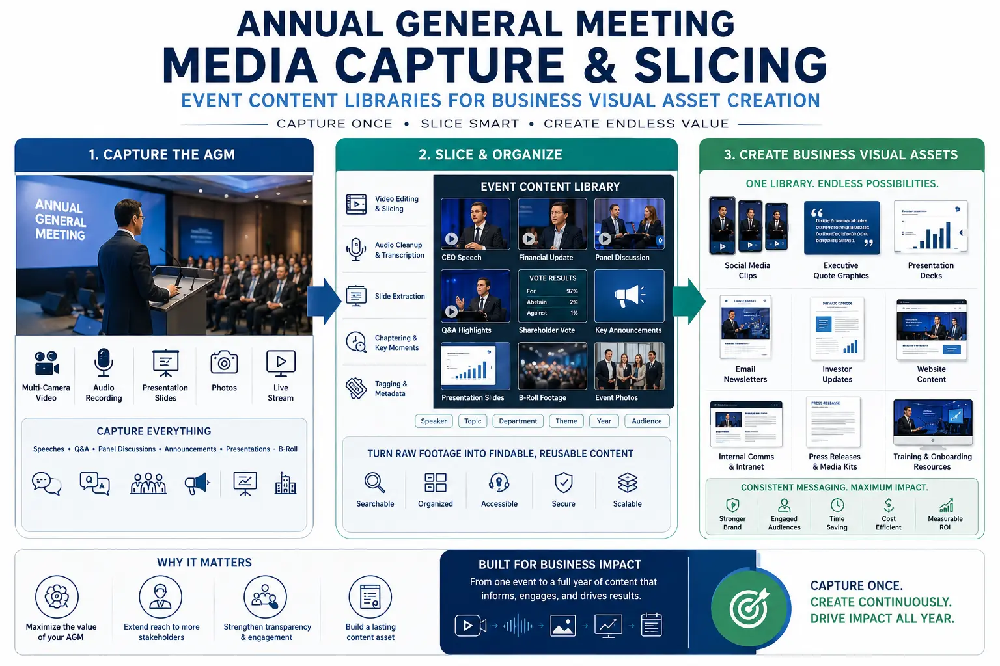
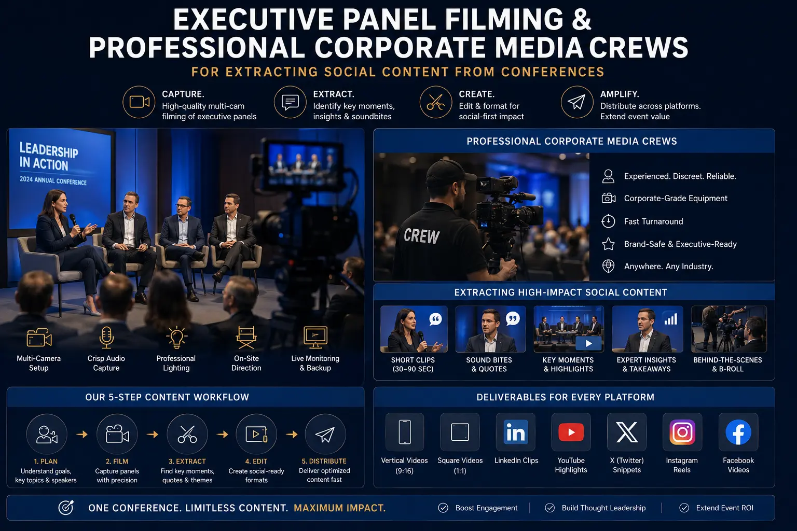

Maximizing Your Annual Corporate AGM and Summit Into a 6-Month Content Engine
Your Most Expensive Content Opportunity Is Being Wasted
Your company's annual general meeting, leadership summit, or industry conference is the single most concentrated content opportunity in your entire year. For two or three days, your most senior executives, your most important clients, your industry's most respected voices, and your most engaged employees are all in the same physical space — delivering speeches, participating in panel discussions, networking, demonstrating products, sharing insights, and generating the kind of authentic, high-value content that no studio production can replicate.
And most companies walk away from this event with a highlight reel and a photo gallery. Perhaps a few social media posts on the day. Perhaps a recording of the keynote uploaded to YouTube with minimal editing. Perhaps nothing at all.
The waste is extraordinary. A two-day corporate summit, properly captured with professional corporate media crews and a pre-planned content extraction strategy, can generate 50–100+ individual content assets — enough high-quality, authentic, authoritative content to sustain six months of consistent publishing across every corporate communication channel. The event happens once. The content it produces should work for the company for the next six months.
The Content Extraction Strategy: Planning Before the Event
Corporate event videography services that deliver six months of content require a fundamentally different planning approach from traditional event documentation. The planning begins not with camera positions and crew schedules but with a content audit — identifying every content asset the event can produce and designing the capture plan to harvest each one.
- Content asset mapping. Before the event, the production team works with the corporate communications team to map every potential content asset: keynote speeches (full recordings and individual topic segments), panel discussions (full recordings and individual panellist statements), executive interviews (pre-planned interviews with key speakers and leadership), attendee testimonials (spontaneous and guided feedback from participants), product demonstrations (walkthroughs and highlight clips), networking moments (relationship-building footage for culture content), environmental footage (venue, branding, atmosphere for B-roll libraries), and behind-the-scenes content (preparation, rehearsals, candid moments for authenticity-driven social content). This content asset map becomes the production brief — ensuring that the professional corporate media crews are positioned, equipped, and briefed to capture every identified asset.
- Format specification for each asset. Each identified content asset is pre-assigned its target formats and platforms — long-form for YouTube and the corporate website, vertical short-form for Instagram Reels and LinkedIn, square format for feed posts, audio extraction for podcast distribution, still frame extraction for social media graphics, and transcript extraction for blog posts and articles. This format specification ensures that the capture approach accounts for all required aspect ratios and that the editing team has clear deliverable specifications from the outset.
- Interview scheduling and question preparation. The highest-value content extracted from corporate events is often the planned interviews — because interviews produce focused, quotable, high-quality content that keynote recordings and panel footage cannot match. Executive panel filming captures what panellists say in the context of the panel. Dedicated interviews capture what they say directly to the camera, with prepared questions designed to extract the specific insights, opinions, and statements that serve the company's content strategy.
- Editorial calendar pre-mapping. Before the event, the communications team maps the six-month editorial calendar — identifying which content assets will be published in which weeks, across which channels, supporting which communication objectives. This pre-mapping ensures that the content extraction is strategically guided rather than ad hoc, and that the post-production team prioritises the assets needed earliest in the calendar.
6-Month Content Supply
A single properly captured corporate event generates 50–100+ individual content assets — enough to sustain consistent publishing across all corporate channels for six months from a single production investment, eliminating the constant pressure of content creation throughout the year.
Executive Thought Leadership
Corporate events concentrate executive availability in a way that routine business operations do not. Capturing executive speeches, panel contributions, and dedicated interviews during the event produces a library of thought leadership content that would require dozens of separate production sessions to replicate.
Authentic Authority Content
Event content carries an authenticity and authority that studio-produced content cannot replicate — real executives delivering real insights to real audiences in real professional contexts. This authenticity translates directly into higher engagement rates and stronger credibility perception.
Cost-Per-Asset Efficiency
When 50–100 content assets are extracted from a single event production investment, the cost per individual asset drops to a fraction of what each asset would cost to produce independently — making event content extraction one of the most cost-efficient content production strategies available.

Annual General Meeting Media Capture: The Multi-Camera Production
Annual general meeting media capture requires a multi-camera, multi-operator production approach designed for maximum content extraction — not just comprehensive event documentation.
- Primary stage coverage: the safety layer. A fixed, wide-angle camera on a professional tripod captures the full stage continuously — providing the safety coverage that ensures no moment is lost, regardless of what the other cameras are doing. This camera runs uninterrupted throughout every stage session, producing the master recording from which all other content is assembled.
- Speaker close-up coverage: the content extraction layer. A second stage camera — operated by a skilled camera operator — captures medium and close-up shots of each speaker, tracking their movements, capturing their expressions, and providing the visual variety that transforms static wide-shot recordings into engaging, editable content. For panel discussions, this camera covers individual panellists in rotation, providing the clean single-speaker shots that are essential for extracting individual statements as standalone content pieces.
- Presentation capture: the information layer. A dedicated capture system records the presenter's screen output — slides, videos, software demonstrations, data visualisations — at native resolution, providing clean presentation content for post-production overlay without the distortion, keystoning, and ambient light contamination that recording a projected screen with a camera produces.
- Roaming coverage: the authenticity layer. One or two roaming camera operators — working with gimbal-stabilised or shoulder-mounted cameras — capture the event's human moments: audience reactions during key statements, networking conversations, behind-the-scenes preparation, candid interactions, venue atmosphere, and the spontaneous moments that communicate the event's energy and community in a way that stage footage alone cannot. This roaming footage produces the authenticity-driven social content and annual gathering highlight reels that generate the highest engagement rates on social platforms.
- Interview stations: the premium content layer. One or two dedicated interview setups — with controlled lighting, professional audio, and branded backgrounds — operate in quiet spaces near the event, capturing planned interviews with speakers, executives, partners, and selected attendees during session breaks. These interviews produce the highest-quality individual content assets from the event: focused, well-lit, professionally recorded statements that serve as standalone thought leadership content, testimonials, and executive communication pieces.
Slicing Event Content Libraries: The Post-Production Workflow
Slicing event content libraries — the systematic extraction of individual content assets from the master event recordings — is the post-production discipline that transforms raw event footage into six months of deployable content.
Transcription and Cataloguing
- Full transcription of all recorded sessions with precise timestamps
- Topic identification: flagging every distinct topic, insight, data point, and quotable statement
- Speaker attribution: tagging every statement to its speaker for thought leadership content
- Engagement moment mapping: identifying audience reactions, applause, and high-energy moments
Content Extraction
- Topic segment extraction: cutting individual topic discussions as standalone clips (2–5 minutes)
- Quote extraction: isolating powerful individual statements as short-form social content (15–60 seconds)
- Highlight compilation: assembling the strongest moments into annual gathering highlight reels
- Interview editing: producing individual interview segments with branded intros and lower thirds
Format Adaptation
- Vertical 9:16 reformatting with dynamic captions for Instagram Reels, TikTok, and YouTube Shorts
- Horizontal 16:9 editing with presentation overlays for YouTube and corporate website
- Square 1:1 formatting with text overlays for LinkedIn and Facebook feed posts
- Audio extraction and editing for podcast distribution of keynotes and panel discussions
Extracting Social Content from Conferences: The Distribution Strategy
Extracting social content from conferences requires a distribution strategy that maximises the reach, engagement, and longevity of each extracted asset across every relevant platform.
- Immediate-release content (Days 1–7). The first week after the event focuses on timeliness — releasing highlight reels, keynote excerpts, atmosphere footage, and behind-the-scenes content while the event is still current in attendees' minds and the broader industry's awareness. This immediate-release content drives the highest engagement because it capitalises on the event's recency and the social momentum generated by attendees sharing their own experiences.
- Thought leadership content (Weeks 2–8). The second phase deploys the meatier content — individual topic segments from keynotes and panels, edited executive interviews, and in-depth discussion clips — positioned as thought leadership content that stands on its own merits rather than relying on event recency for relevance. This content is distributed with contextual introductions that frame each piece as expert insight rather than event documentation.
- Evergreen content (Months 3–6). The third phase deploys content with lasting relevance — industry insights, strategic perspectives, technical knowledge, and expert opinions that remain valuable regardless of when they were originally recorded. This evergreen content is repurposed and recontextualised for current relevance: a keynote insight about industry trends becomes a commentary on current market conditions; a panel discussion about technology adoption becomes a response to a recent industry development.
- Anniversary and retrospective content (Month 6+). As the next annual event approaches, previously unreleased or recontextualised content from the previous event serves as anticipation-building content — "Last year's insights that shaped this year's agenda" or "The predictions our leadership made last year and how they played out." This retrospective content closes the content cycle and builds anticipation for the next event's content capture.

Executive Panel Filming: Capturing Individual Value from Group Discussions
Executive panel filming requires specific production techniques that enable the extraction of individual speaker content from group discussion formats.
- Individual audio isolation. Each panellist receives their own lapel microphone, recorded to a dedicated audio channel or separate recorder — providing clean, isolated audio for each speaker that enables precise editing of individual statements without background bleed from adjacent panellists, audience noise, or room acoustics.
- Speaker-specific camera coverage. The camera coverage plan ensures that each panellist receives sufficient individual screen time for content extraction — either through a dedicated camera assigned to rotating panellist coverage or through a switched multi-camera system that captures individual reaction shots and speaking moments for each participant.
- Real-time content flagging. A dedicated content producer monitors the panel discussion in real time, flagging quotable moments, controversial statements, data citations, and high-engagement exchanges with timestamps — creating an extraction map that enables the post-production team to locate the highest-value segments immediately rather than reviewing hours of footage.
- Post-panel interview capture. Immediately following the panel discussion, each panellist is offered a brief (3–5 minute) individual interview that captures their key points, expands on their most interesting statements, and provides clean, well-lit, professionally recorded individual content that complements the panel footage. These post-panel interviews often produce the most commercially valuable content from the panel — because the panellist has just articulated their position in the discussion and can now deliver it with the focus and clarity that the panel format's time constraints prevented.
Business Visual Asset Creation: Beyond Video
Business visual asset creation from corporate events extends beyond video into the full spectrum of visual content that sustains corporate communication.
- Professional event photography. A dedicated photographer (or photography team for larger events) captures the full range of event imagery — keynote speakers on stage, panel discussions, networking interactions, product demonstrations, venue branding, and the candid human moments that communicate corporate culture and community. These photographs serve as social media content, website imagery, annual report visuals, internal communication assets, and press materials.
- Quote graphics and data visualisations. Key statements extracted from speeches and panels are designed into branded quote graphics — pairing the speaker's photograph with their most impactful statement in a visually compelling format optimised for social media sharing. Data points and statistics cited during presentations are designed into data visualisation graphics that communicate key insights in shareable, visual formats.
- Podcast and audio content. Keynote speeches and panel discussions are extracted as audio content for podcast distribution — reaching audiences who consume content during commutes, exercise, and other audio-friendly contexts. A professionally produced podcast series — "Insights from [Event Name]" — extends the event's reach to audiences who would not watch long-form video content.
- Written content from transcriptions. Full transcripts of speeches and panel discussions are repurposed into written content: blog posts that summarise key insights, articles that expand on specific topics, whitepapers that compile related themes across multiple sessions, and social media text posts that share individual quotes and perspectives. This written content serves SEO objectives that video content alone cannot address and reaches audiences who prefer text-based content consumption.
Conclusion
Corporate event videography services, annual general meeting media capture, slicing event content libraries, extracting social content from conferences, and business visual asset creation are the production and strategy disciplines that transform a two-day corporate event into a six-month content engine — generating the volume, variety, and quality of content that would require dozens of separate production sessions to replicate.
The commercial logic is straightforward: the event is happening regardless. The executives, the speakers, the clients, the employees are all gathered in one place. The only variable is whether you capture the content opportunity or let it pass. Professional corporate media crews with a pre-planned content extraction strategy ensure that every speech, every panel, every handshake becomes a content asset that works for your company for the next six months.
At The PhD Ads in Madurai, we provide corporate event videography services, executive panel filming, and business visual asset creation for companies ready to turn their annual events into six-month content engines — a business summit video production company that captures not just the event but the six months of content it contains.
Key Topics
Ready to Turn Your Next Corporate Event Into a 6-Month Content Engine?
At The PhD Ads in Madurai, we provide corporate event videography services, executive panel filming, and business visual asset creation — professional corporate media crews that capture not just the event but the six months of content it contains.
Email: team@e2o.in